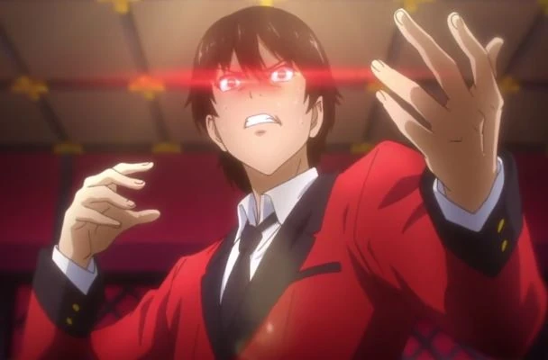
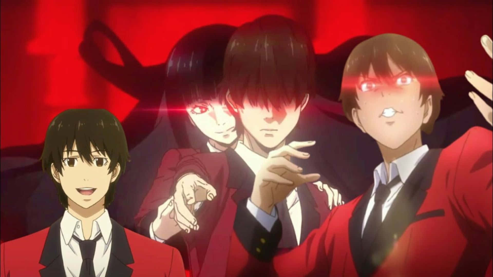

Ryota Suzui (鈴すず井い涼りょう太た Suzui Ryōta) é um dos deutaragonistas de Kakegurui. Ele é um antigo bicho de estimação que teve sua dívida com Mary Saotome paga depois que Yumeko Jabami lhe deu uma certa quantia em dinheiro como agradecimento, se tornando seu primeiro amigo na Escola Particular Hyakkao.
Ryota é um jovem rapaz de estatura mediana e magro; ele possui pele clara e cabelos bagunçados num tom castanho e olhos da mesma cor. Ele utiliza o uniforme padrão masculino da escola que se consiste em uma camisa de manga longa branca, gravata preta, blazer vermelho de botões dourados, calça cinza, meias brancas e sapatos marrons.
Ryota é uma pessoa amigável e gentil que, antes de conhecer Yumeko, possuía baixa autoestima que só diminuiu depois que sua dívida com Mary aumentou ainda mais. Apesar de não ser reservado, ele também não é extrovertido e demonstra uma certa timidez principalmente em volta de outras garotas. Mary apontou que ele é honesto ao ponto de ser ridículo. Ryota é dito como sendo bastante equilibrado mas compreensivo por tentar entender o comportamento louco e excêntrico de Yumeko; ele raramente guarda rancor contra as pessoas, um claro exemplo sendo Mary, desde que ele a trata normalmente mesmo depois de toda a humilhação que ela o fez passar. Apesar de não necessariamente gostar de participar, Ryota não é um mau apostador e é até que bem inteligente mesmo que a escola não foque nos estudos propriamente dizendo, apenas não gosta de tomar grandes riscos. Ele consegue analisar a situação e os detalhes desta rapidamente, criando estratégias para que lhe dêem vantagem; desde que não é tão confiante em si mesmo, costuma duvidar que pode sequer conseguir fazer algo.
VOLTAR